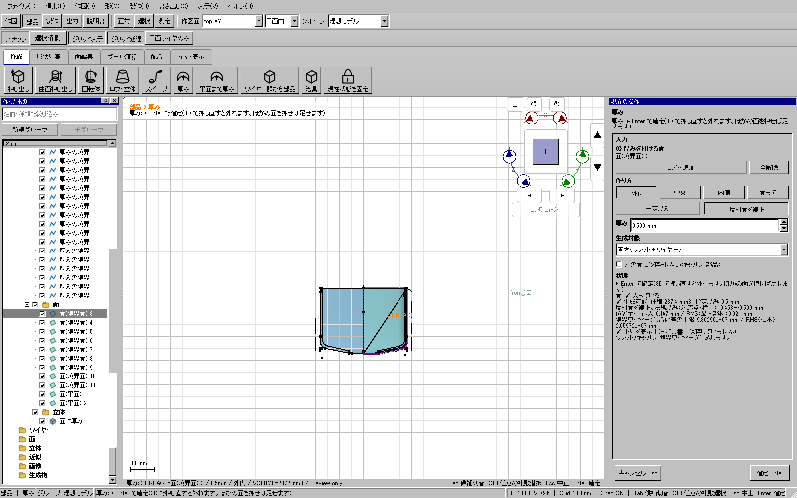
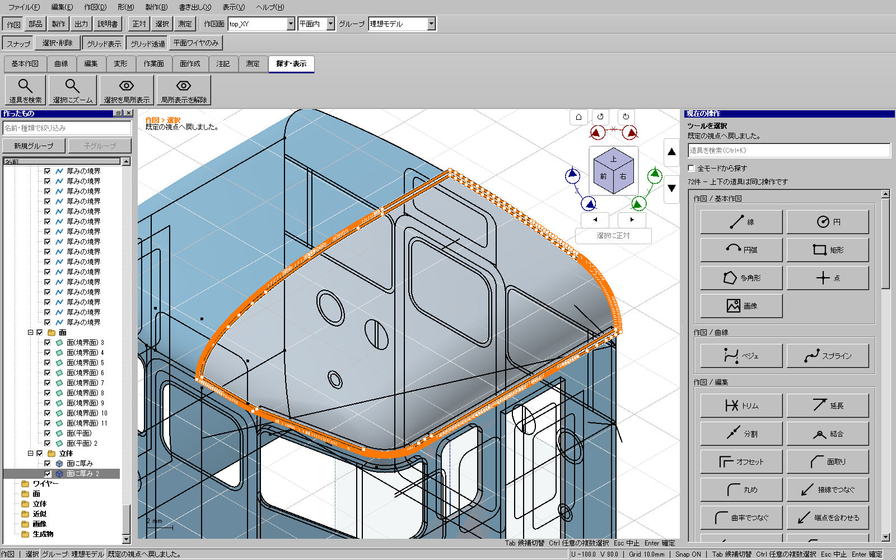

Windows全体・配布版検証済み。実装c3a276d5dd51c43829e45e66093e019419a6acc7。事前9件、CTest197件（skip0）、開発版・配布版UI各1005件、従来自己試験、配布通常起動2経路が成功。検証済み配布物で添付コピーの厚み付け・履歴・保存再読込・STEP/STLの2段階の任意UI再生も成功した。
添付115投影.kcd2の「面(境界面) 3」を、既存の「反対面を補正」を明示して厚み付けできた。元の曲面を片側に保ち、閉じたnativeソリッドとして確定・Undo/Redo・保存再読込・UIからSTEP/STL出力を確認した。一定厚みへ黙って補正を適用していない。

| 添付コピーの結果 | 実測 |
|---|---|
| 指定値 | 外側0.5 mm・反対面補正 |
| 標本の法線厚み | 約0.45833～0.50000 mm |
| 理想オフセットへの位置偏差 | 最大約0.167467 mm、RMS約0.0207872 mm |
| native体積 | 約287.417 mm³ |
| UI操作 | 開発時のwrapper8件と公開候補の任意再生2段階が成功。下見・確定・Ctrl+Z/Y・再読込・STEP/STL保存 |
| 元の12形状 | 作成・Undo・Redo・再読込で表示メッシュSHA256が全て一致 |
| 元の393 feature | 作成/Redo保存では全定義とIDが一致。再読込保存では既存円弧1本の単位方向ベクトル3成分だけ約2.3e-16以下の正規化丸めがあり、他は一致 |

境界角(6,-27,27)では、近づく方向で法線が変わる。明示補正でも法線を1本に決めることを必須としていたため拒否された。補正計算では複数方向・複数段階の片側法線を扱い、同じ半球へ向くことを確認し、既存の厚み・反対面の向き・最大/RMS偏差・閉鎖性・体積・自己交差の検査を全て維持する。折返しで向きを決められない場合は引き続き拒否する。
元の面を切り出したnative境界の許容差が約17.7227 mmに拡大した経路もあった。1本の閉じたUV矩形を各辺の区間で証明できる場合だけ、同じ曲面の同じ範囲から計算用の面トポロジーを再構成する。元のガイド・線・UUID・参照・保存定義は変更せず、穴・切欠き・斜辺・重複を外接矩形で埋めない。
最初の厳密ノット分割＋面ごとの厚み結合は、native上で閉じた有効ソリッドになっても一部を落とした。独立した法線交差と元面保持照合で検出し、不採用・未公開とした。一般の厚み結果にも、元の面の範囲が結果から落ちる候補を拒否する必要条件を追加した。範囲検査だけを十分条件にはしていない。
回帰は、矩形の正本形状・反転/回転/移動・元native不変、複数穴/凹切欠き/斜辺の拒否、閉じた部分結果の拒否、添付曲面の厚みと9か所の独立法線交差/元面保持、STEP/STL、剛体配置後の補正体積・厚みと元面不変を含む。関連CTest3件と追加配置回帰が成功した。1e-8のnative質量精度を緩和せず、表示メッシュを正本にしていない。
原本へ保存していない。検証コピーのSHA256は84c716b3e6af1ae8f87da4ee4df92226ef326b03e1e44f8c6ce7f84152125ede。検証手順と実物はout/curved-top-thickness-20261112/published-ui-final。最初の配布再生は古い出力先への上書き確認で停止したため、新規保存先へ修正して再実行した。旧STEP/STLのSHA256は不変で、停止記録も保持する。途中の幾何試作不合格も同じ調査フォルダーに保持する。
公開版（更新3）。検証済みZIPは76,206,497バイト、SHA256 27c895900d2f069661a2ac91dbfb00379314e5a10bff99faf1309d692c879a0e。